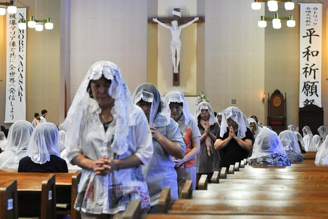
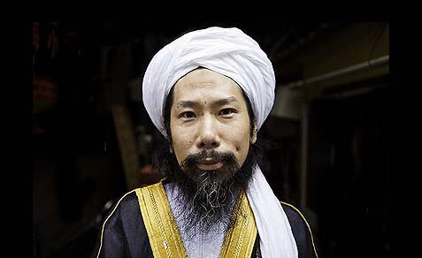
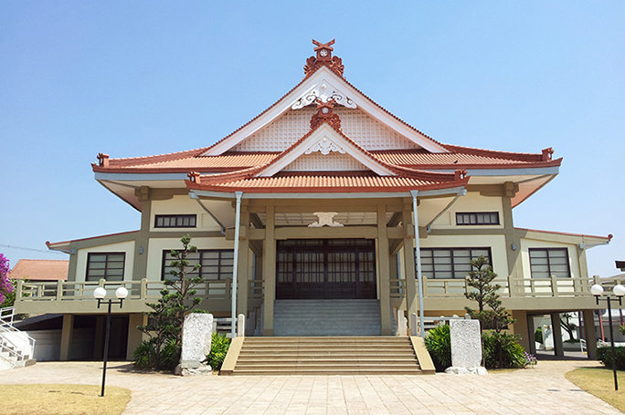

El cristianismo también está muy presente en la cultura japonesa. Este llegó en 1549 de parte del misionero español Francisco Javier, y fue difundido por misioneros europeos, sobre todo por jesuitas; estos fueron conocidos en Japón como Kirishitan. Al principio, las autoridades japoneses apoyaban la presencia de la religión como una forma de contrarrestar el budismo; sin embargo, poco después vieron que los europeos estaban conquistando territorios en Asia a base de la conversión religiosa y los veían como una amenaza. Por ende, a comienzos de la era Tokugawa, en el siglo XVII, se prohibió el cristianismo durante dos siglos hasta la Restauración Meiji, cuando se permitió la llegada de misioneros cristianos.
El judaísmo, mientras tanto, es practicado por una pequeña comunidad de japoneses. Hay también estadounidenses y europeos en dos sinagogas y varias bases militares estadounidenses en Japón. Las sinagogas están en Tokio y Kōbe, y hay aproximadamente 600 judíos extranjeros no militares que residen en todo el Japón.
También en Japón ha surgido otras religiones como las "Nuevas Religiones Japonesas" o Shinshūkyō (新宗教), y que tienen origen en el shinto, el budismo, tradiciones folclóricas y algunos elementos sociales. Surgieron a partir de la Era Meiji, y existen centenares de sectas, muchas de estas con mucho arraigo con el shinto, consideradas a veces como "sectas shinto", y no tienen una gran membresía. La más notable es la Soka Gakkai, y que tiene una pequeña presencia política en Japón; otras religiones son la Seicho-No-Ie (生長の家), la Shinreikyo (神霊教 Shinreikyō), la Kōfuku-no-Kagaku (幸福の科学), Mahikari, Oomoto (大本), Konkokyo (金光教), Tenrikyo (天理教), y el famoso Aum Shinrikyo, que realizó un atentado terrorista en 1995 en Tokio.
La Fe Bahá'í en Japón comienza después de un par de menciones del país por Abdu'l Bahá por primera vez en 1875. Japón se contactó con la religión que viene del oeste, cuando Kanichi Yamamoto (山 本 寛 一), que vivía en Honolulu, Hawaii, se convirtió en 1902, y el segundo fue Saichiro Fujita (藤田 左 弌 郎). El primer converso bahá'í en suelo japonés era Kikutaro Fukuta (福田 菊 太郎) En 1915. Casi un siglo después, la Asociación de Religión Archivos de Datos (basándose en la Enciclopedia Mundial Cristiana) estima que unos 15.700 bahá'ís en 2005, mientras que el CIA World Factbook estima que cerca de 12.000 bahá'ís japoneses en 2006.
Las estimaciones de la población musulmana se han colocado alrededor de 115 000 a 125 000, de los cuales aproximadamente el 90% son residentes extranjeros, y el resto son japoneses étnicos. Indonesios, bengalíes, pakistaníes e iraníes, constituyen las mayores comunidades de musulmanes extranjeros en Japón.